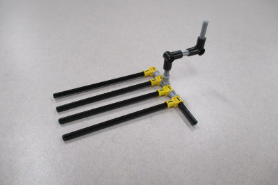
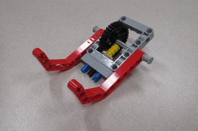

When designing our base robot, we establish criteria at the outset, such as desired footprint, height, balance, drive train, sensors to be used, user interface, etc. to arrive at a working prototype. We also strive to design and build a base robot which is robust and which features a frame around the chassis to provide structural rigidity as well as means to square up against walls and mission models. We design attachments keeping in mind that these attachments need to be easy to install and remove, robust, and both passive and multi-purpose whenever possible. From testing the prototype base robot and the attachments, we make revisions to our work in order to combine and speed up missions and increase repeatability to achieve maximum efficiency. By the end of the season, our attachments will often be in their fifth or sixth iteration.


Our base robot is very robust and compact with a frame for strength. We also use four light sensors for maximum flexibility, with shielding from ambient light. The robot’s main drive wheels are medium in diameter and small in thickness to allow us to balance accuracy and speed together. The robot uses small wheels without rubber on them as sliders, to be steering neutral. Our modular design and attachment bay allows the robot driver to install and remove attachments quickly and accurately, while our brain’s positioning allows for easy swapping of batteries.


When first designing our robot we wanted to make sure that all the light/color sensors behaved similarly. Color sensors each return small differences in readings because of variations in manufacturing. For example, if you were to place two different color sensors on the same black line, each would return different values for light intensity. Sometimes the difference may be significant. To make sure that all our light sensors had about the same reading we completely shielded ten color sensors to eliminate the variable of ambient light and recorded the reading for each of the color sensors on black, white, and green. We then found the three color sensors which have the closest reading to each other and used those three color sensors on the robot.
We have found that the green EV3 move blocks (Move Tank and Move Steering) are unreliable. Although they have a built in PID feature, they still do not move the robot in a straight line. To test this, we set a designated starting spot for the robot and then we ran it until it hit the wall on the other side of the table. We repeated this dozens of times and found that each time it would end up in a different spot on the other side of the table. Each time it would be up to one inch away from the previous run. Then, we made our own error-corrected move block (which you can read about in the programming section of this website). We conducted the same experiment using our block and found that there was much less error and the robot would consistently end up in the same position on the table.
Our light sensors were dependent on the distance they were away from the mat. We found out that our light sensors were too low to the mat and were not picking up proper light readings. We used the EV3 experiment which can track the different movements on the motors and sensors. We tracked the readings to see if they would change properly from white to black; 100 to 0. They did not reach those values so we realized it was too far from the mat.
| Name of Attachment | Description | Picture |
|---|---|---|
| Core Carts | This attachment is a large frame with guide wheels to move along the west wall. It has a long horizontally-moving arm that uses string and a pulley system to move which connects to the gears on the robot when the frame is placed over the robot. As the robot moves along the west wall towards the Space Travel mission using its guide wheels, the arm extends eastward to trigger an elastic mechanism to collect all core samples. The arm then retracts. When the robot reaches the Space Travel mission, it uses a wedge to passively lift the end of the ramp resulting in the Vehicle Payload rolling down the ramp. While doing this, an arm on the end of the attachment pushes the Solar Panel Array away from our competition table. The robot then drives into the ramp releasing the other two payloads and allowing them to roll down the ramp. The robot uses another arm to flatten the gate on the Crater Crossing mission model, preparing it for a later mission. The robot then travels back to base. |

|
| Escape Velocity | This attachment is a small frame that holds the robot with guide wheels to roll along the south wall. This attachment also has two arms, one to trigger the Escape Velocity mission, and another to push the Observatory arm to the orange. Another two motor powered arms trigger these arms. As the robot travels along the south wall, it Escape Velocity mission model and the motor-powered arm activates the elastic-powered arm that is used to push the Observatory arm. As the robot continues moving, this arm pushes the Observatory’s arm to the orange target area. The robot then moves back a set distance, and another motor-powered arm releases another elastic-powered arm that completes the Escape Velocity mission. Then the robot travels along the south wall back to base. |

|
| Tube Module | This attachment is small with a guide wheel that is placed at the end of the attachment furthest from the robot. The robot moves diagonally starting at the south wall and traveling towards the Habitation Hub mission model. Once the sliding portion of the attachment reaches this mission model, angled beams on it act as a funnel and force it to slide outwards. As the robot continues forward, the Tube Module is inserted into the west side of the mission model. Once the Tube Module is inserted, the robot will travel back into base diagonally. |  |
| 3D Water Strength | This attachment is medium in size and locks into place by being pushed on top of the robot. It connects to a pneumatic attachment that is a leave behind attachment. It has two arms made from axles to hold the satellites on the top of this attachment. It also has a funnel to adjust the robot’s position when completing the 3D Printer mission and guide wheels on the pneumatic attachment to roll against the north wall. The robot first makes an arc turn out of base to reach the 3D Printer mission model. The regolith is placed on an axle that triggers when it hits the mission model. This also releases an agent craft that travels from east to west, completely past the flattened gate of the Crater Crossing mission model. The robot then travels into the Strength Bar mission model, which triggers the pneumatic powered arm to push the Strength Bar upwards and releasing the pneumatic attachment from the robot. Then the robot backs away from the Strength Bar mission model and travels to the Food Production mission model where the robot pushes the bar until the green side is showing, then a motor powered arm releases the water Core Sample onto the Food production mission model. Finally, the robot completes an arc turn, collecting the X satellite and pushing it to its target area, in-between the two lines near the northeast planet area. The two satellites that are already on our robot will also be in their target area suspended in the air. |  |